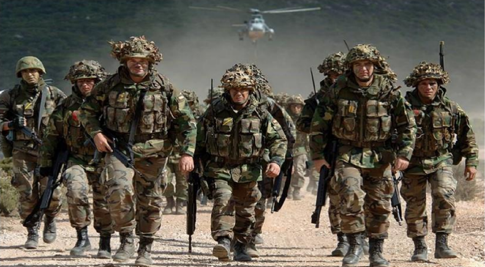

.....................

Macroergonomía Militar, Propiedades Emergentes y Factores Humanos como estructura para la innovación de las Fuerzas Armadas.
Evento:
Autores:
Crnl (EM) Freddy José Játiva C. MSc.
MSc. Edgar Fabián Montaluisa
Cap. (E) Ignacio Maldonado Vaca MSc.
MSc. Santiago Urquizo
Dr. Ender Enrique Carrasquero Carrasquero PhD – Investigador Prometeo
ISBN:
© Agosto 2016 Universidad de la Fuerza Armada – ESPE, SENESCYT PROYECTO PROMETEO
978-9942-14-917-6
............................................................................
Temas y Variaciones en la Calidad y Productividad actual: Un Camino para las Organizaciones del Futuro.
Autores:
Ender Carrasquero, Pablo Amaguayo, Patricia Cunalata, Iván Sánchez, Diana Andino, Fernando Granda,
Christian Villa, Alejandro Cisneros, Holger Cruz, Mariela Cordero, Marcelo Tipán, Johanna Gaibor,
Diana Paspuel, Jorge Bone, David Córdova, David Crespo, Gabriela Montenegro, María Serrano, Jessica
Torres, Karina Jácome, Ademig Carreño, Andrés Flores, Robinson Bolaños, Javier Ramírez, Marcelo
Guerra, Alejandra Albán, Jaime Beltrán, Ana Chicaiza, Andrea Enríquez., Andrea Muñoz, Liliana Reza,
Vinicio Jácome, Lorena Pazmiño, María Villagomez, Fernando Cevallos, Narcisa Mena, Juan Fuertes,
Aníbal López, Catalina Ordoñez, Ángel Luzón, José Ramírez, Liliana López, Roberto Maldonado, Valeria
Alomía, Katherine Castro, William Calvopiña, Andrea Jaramillo.
ISBN:
© 2016 Universidad de la Fuerza Armada – ESPE
978-9978-301-79-1